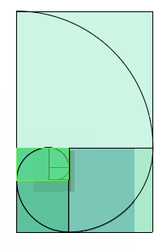

Spectra
Is there a continuous surface made up of every continuous function?
This math poem thought eperiment meanders towards the answer.

Spectra
Is there a continuous surface made up of every continuous function?
This math poem thought eperiment meanders towards the answer.
Phi
I wrote this golden spiral applet, stream-of-consciousness-style, to learn the language Processing. Turn down your speakers, as it is potentially noisy:
Higher Order Verbs
Definition:
We define the verb order of a word recursively as follows:
So, for example, 'whine' is a 3rd-order verb, since its past tense is 'whined', which is pronounced the same as 'wind', the past tense of which is 'wound', which is spelt the same as 'wound', as in "to injure," the past tense of which is 'wounded'.
Known higher order verbs:
These are all of the 3rd order verbs we have found:
And here is a complete list of 2nd and 3rd order verbs, as well as a few cyclic / infinite-order verbs (like ... --> read --> read --> ...):
Comments:
If you find a 4th order verb, or a verb which is cyclic but with a word inbetween (i.e. ... --> A --> B --> A --> ...) then I will be indescribably astounded and joyous.
And in general, if you think of anything not on the above list, please email me.
Funny English Place Names
Here are some funny names of English towns and villages, courtesy of four pages my grandfather slipped into his Oxford English Dictionary of British Place-Names, plus a few road signs I saw while driving between Portsmouth and Wales:
|
|
*My grandfather remembers seeing a newspaper article saying that The Ugley Women's Institute had changed its name to The Women's Institute of Ugley.
Feel free to email me with any additions.
Bedtime Theorems
Abstract:
This paper presents several concepts defined or discovered by the author and M. C. Garcia, also of the Massachusetts Institute of Technology, from January 2004 through March 2004. Most of these concepts were conjectured while falling asleep, but they were often built upon and made rigorous throughout the days following, including especially during the writing of this paper.
The paper consist of three main concepts: The Proof Theorem, which renders the proof of true statements trivial; The Shackletonian Operator, which facilitates and formalizes the act of looking at a portrait of the explorer Sir E. H. Shackleton while having sexual intercourse; and The Lifting Theorem, which essentially proves that everything can be viewed as funny, if one 'lifts' oneself to a high enough point of view. The second and third sections rely heavily on the power of the first section's theorem.
Download: